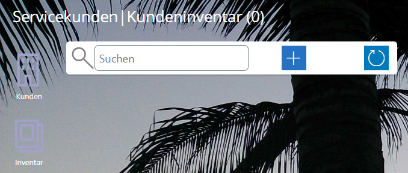
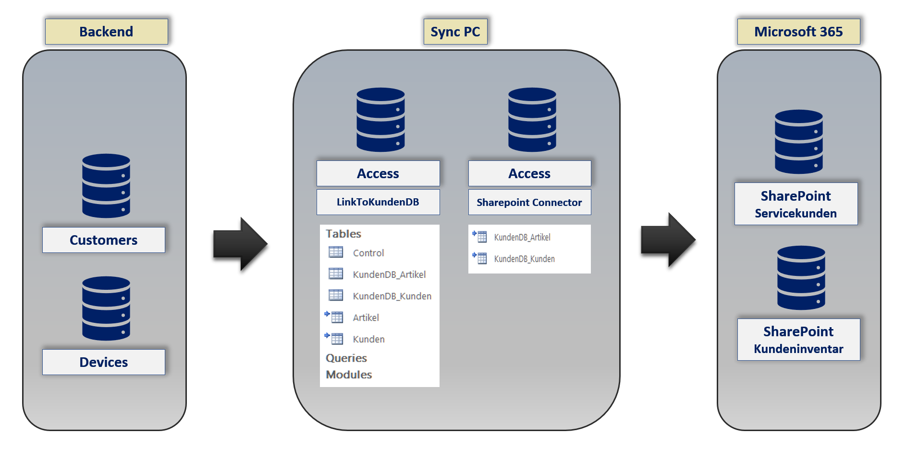

Benutzerhandbuch
pobvol Service Solution
Power App pssService Board
Stand: 9'25
Deutsch /
English
Benutzerhandbuch
pobvol Service Solution
Power App pssService Board
Stand: 9'25
Deutsch /
English
Kunden- und Kundeninventardaten benötigt Ihr Serviceteam für die Planung und Dokumentation der Serviceaktivitäten.
Die Daten werden entweder von App-Admins in der Power App pssService Board erfasst oder aus einer angeschlossenen Datenbank übernommen.
Gespeichert werden die Inventardaten in der SharePoint-Liste (SP-Liste) "Kundeninventar".
Das Inventar-Icon
Anzahl Kundeninventar
Inventarübersicht I
Inventarübersicht II
Die Kundeninventardaten
Die Kundendaten
Zugeordnete Serviceverträge
Erfasste Servicevorgänge
Offene Serviceaufträge & Erinnerungen
Ein Inventar hinzufügen
Eine Datenbank anschließen
Top ↑
Auf jedem Screen der App pssService Board finden Sie links das Inventar-Icon.
Top ↑
Der StartScreen der App pssService Board zeigt im Bereich "Stammdaten" die Anzahl des hinterlegten Kundeninventars an.
Ein Klick auf diesen Container öffnet den Screen "Kundeninventar". Die Inventarübersicht mit der Detailanzeige wird eingeblendet.
Top ↑
Auf dem StartScreen der App pssService Board finden Sie im Bereich "Kundeninventar" eine Inventarübersicht.
Um die Liste zu filtern, einfach einen Suchbegriff im Suchfeld eingeben. Es werden dann nur die Einträge gelistet, bei denen der Suchbegriff gefunden wird. Überprüft werden dazu Kundennummer, Kundenname, Seriennummer (=Gerätenummer), Hersteller, Geräteart (=Gerätebezeichnung), Kundeninventarnummer, Inventarnummer und Gerätetyp.
Sortiert wird die Liste nach Kundenname und Inventarnummer.
Ein Klick auf einen Eintrag öffnet den Screen "Kundeninventar". Die Inventarübersicht mit der Detailanzeige wird eingeblendet und das ausgewählte Inventar angezeigt.
Top ↑
Mit einem Klick auf einen Eintrag wird das Inventar in der Detailansicht angezeigt.
Top ↑
Top ↑
Top ↑
Ein Klick auf einen Eintrag öffnet den Screen "Serviceverträge". Die Vertragsübersicht mit der Detailanzeige wird eingeblendet und der ausgewählte Vertrag wird angezeigt.
Top ↑
Ein Klick auf einen Eintrag öffnet den Screen "Servicevorgänge". Die Vorgangsübersicht mit der Detailanzeige wird eingeblendet und der ausgewählte Vorgang angezeigt.
Top ↑
Ein Klick auf einen Eintrag öffnet den Screen "Serviceaufträge". Die Auftragsübersicht mit der Detailanzeige wird eingeblendet und der ausgewählte Eintrag angezeigt.
Top ↑
Auf dem StartScreen der App pssService Board die Servicekunden aufrufen, einen Kunden auswählen und das Kundeninventar aufrufen. Bei neuen Kunden ist die Inventaranzeige erst einmal leer, bis das erste Inventar erfasst wurde.
Hinzufügen wählen. Der Screen "Kundeninventar hinzufügen" wird eingeblendet.
Hinweis: Welche Information zu einem Kundeninventar erfasst werden kann, hat Ihr Admin bei der Installation der Lösung pro Gerätetyp festgelegt.
Eine eindeutige Inventarnummer eingeben. Geben Sie bitte die richtige Inventarnummer ein. Dadurch werden geänderte Daten automatisch aus einer eventuell angeschlossenen Datenbank übernommen. Geräte ohne Verbindung zu Ihrer Datenbank sollten mit einem separaten Z-Nummernkreis erfasst werden (bspw. Z01).
Den Gerätetyp festlegen. Welche Gerätetypen verfügbar sind, hat Ihr Admin bei der Installation der Lösung festgelegt (Flurförderzeug, Fahrzeug, Leiter, etc.).
Den Hersteller eingeben.
Die Geräteart eingeben. Das ist eine Kurzbeschreibung (bspw. Mini).
Die Kundeninventarnummer eingeben - wenn bekannt. Ob das Feld angezeigt wird, hat Ihr Admin bei der Installation festgelegt.
Die Artikelnummer des Herstellers eingeben - wenn bekannt. Ob das Feld angezeigt wird, hat Ihr Admin bei der Installation festgelegt.
Die Seriennummer ( = Gerätenummer) eingeben - wenn bekannt. Ob das Feld angezeigt wird, hat Ihr Admin bei der Installation festgelegt.
Den Standort des Geräts eingeben - wenn bekannt. Ob das Feld angezeigt wird, hat Ihr Admin bei der Installation festgelegt.
Die GPS-Koordinaten des Standorts eingeben - wenn bekannt. Das hilft den Technikern bei den Einsätzen. Die Koordinaten können von einer Navigationssoftware genutzt werden.
Ein Serviceintervall für regelmäßig wiederkehrende Serviceaktivitäten (Wartung, Kontrolle, Prüfung) zuordnen. Beim Speichern, wird die nächste Prüfung/Wartung berechnet. Formel: Datum der letzten Prüfung/Wartung + Serviceintervall in Monaten. Ist kein Serviceintervall bekannt, wird mit 12 Monaten gerechnet. Ob das Feld angezeigt wird, hat Ihr Admin bei der Installation festgelegt.
Das Baujahr eingeben - wenn bekannt. Ob das Feld angezeigt wird, hat Ihr Admin bei der Installation festgelegt.
Betriebsstunden können nicht am Inventar/Gerät gepflegt werden. Diese Information kann nur im Servicevorgang erfasst werden. Ob das Feld angezeigt wird, hat Ihr Admin bei der Installation festgelegt.
Softwareversion eingeben - wenn bekannt. Ob das Feld angezeigt wird, hat Ihr Admin bei der Installation festgelegt.
Hardwarestand eingeben - wenn bekannt. Ob das Feld angezeigt wird, hat Ihr Admin bei der Installation festgelegt.
Modulinformation eingeben - wenn bekannt. Ob das Feld angezeigt wird, hat Ihr Admin bei der Installation festgelegt.
Zusätzliche Bemerkungen eingeben - wenn gewünscht.
Zum Schluss "Daten speichern" wählen.
Top ↑
Servicekunden und Kundeninventar können aus einer angeschlossenen Datenbank übernommen werden. Eine Anpassung der Stammdaten entfällt in diesem Fall.

Es werden nur die Stammdaten übernommen, die auch benötigt werden! Demodaten-Flag gesetzt? Servicevorgang erfasst? Kunde in SP-Liste Servicekunden vorhanden? Kundeninventar in SP-Liste Kundeninventar vorhanden?